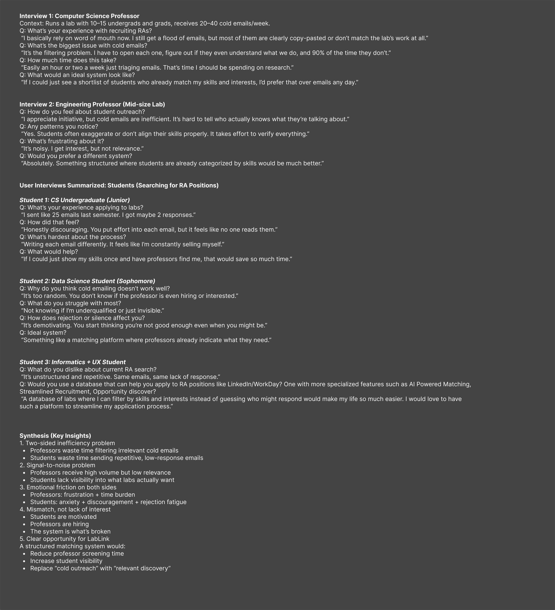

Experience design
LabLink
A two-sided platform that replaces cold research emails with structured discovery for students and triage for professors.
Final product
High-fidelity student and professor paths, from first onboarding through core product surfaces used in the build.
Tech demo
Walkthrough of the built LabLink experience.
Product screens


TL;DR
Students send dozens of cold emails and hear almost nothing back. Professors spend hours each week filtering messages that rarely match the lab.
I led research synthesis, dual-sided flows, visual system, and high-fidelity UI for onboarding, discovery, profiles, and lab management, then handed a scalable Figma kit to engineering.
A designed and built two-sided LabLink experience: scholars and investigators enter separate paths, match on traits and openings, and track interest without rewriting the same cold email.
Context and challenge
Research openings live across department pages, word of mouth, and inboxes. A CS professor in our interviews described 20 to 40 cold emails a week, with most clearly copy-pasted or unrelated to the lab. Students described the opposite: one junior sent about 25 emails and got maybe two replies.
The breakdown is not lack of interest. Students want labs. Professors hire. The channel between them is what fails.
Replace cold outreach with relevant discovery so professors see matched shortlists and students stop guessing who is hiring.
Goals
- Help students show skills once, filter labs by fit, and apply without rewriting the same pitch.
- Give professors structured openings, trait tags, and applicant status instead of inbox triage.
- Keep design-to-code feasible for a semester build with a shared component kit.
Research and insights
Methods: interviews with professors and students searching for RA roles, then synthesis into shared failure modes.

Interview notes and synthesis that framed the product opportunity.
Student insights
Effort without reply burns motivation
Students invest in tailored emails and still feel unread. Silence reads as personal failure even when the real issue is volume on the other side.
Hiring intent is invisible
Cold emailing feels random when students cannot tell if a lab is open, what skills matter, or whether they are underqualified or simply unseen.
Show skills once, then filter
Students asked for a lab database with filters by skills and interests, closer to a specialized board than another blank email draft.
Professor insights
Filtering eats research time
Professors described an hour or two a week opening emails just to learn that most applicants do not understand the lab's work.
High volume, low relevance
Initiative is welcome. Unstructured outreach is not. Interest arrives without signal about skills or fit.
Shortlists beat inboxes
An ideal system would surface students already categorized by skills and interests instead of forcing professors to reconstruct that from prose.
Ideation and structure
I mapped separate journeys for undergrads and professors, then aligned them on discovery, trait matching, messaging, and status tracking.
Student and professor flows, plus early professor onboarding and posting sketch.
Process
Mood, logo exploration, and palette work before the UI kit locked.
Mood board, logo work, and palette before the UI kit locked.
Pitch deck
Full pitch deck. Open in a new tab if the embedded viewer is unavailable.
Design decisions
Two entry paths, not one feed
The decisionOnboarding splits scholars and investigators into separate surfaces that meet at openings, trait tags, and review, instead of one shared social feed.
WhyStudents need discovery and status. Professors need posting and triage. A single feed would optimize for neither.
Traits as the matching language
The decisionStudents add personalized tags. Professors tag openings with the traits they want. Matching and recommendations sit on that shared vocabulary.
WhyInterviews showed the real failure was signal, not motivation. Tags make relevance visible before either side writes a paragraph.
Feasible handoff over maximal AI chrome
The decisionEarly flows explored AI chat matching and AI-written application questions. I kept the product centered on structured profiles, openings, and status, with AI as assistive recommendation rather than the whole interaction model.
WhyShipping with developers meant every screen had to map to buildable components. I standardized a multi-component Figma UI kit so velocity did not depend on one-off artboards.
Before: sketch exploring auth, traits, and AI match notes. After: structured professor onboarding in the product UI.
Results and impact
LabLink moved from research notes and dual-sided flows into a designed product system and team build. The Figma UI kit standardized components across sprints and improved design-to-code velocity. Wireframes and research synthesis stayed tied to what engineering could ship.
If I could just see a shortlist of students who already match my skills and interests, I'd prefer that over emails any day. Computer science professor, interview
Reflection
What I learned
- Two-sided products need research that treats each side as a full user, not a secondary persona.
- The hard problem was signal and structure, not convincing people that research mattering was desirable.
- A shared component kit is how design quality survives a multi-developer semester.
What I would do next
- Validate trait matching with live applications and measure time-to-shortlist for professors.
- Pressure-test onboarding length against drop-off for both scholars and investigators.
- Tighten which AI assists stay assistive versus which become core path dependencies.
Ripple